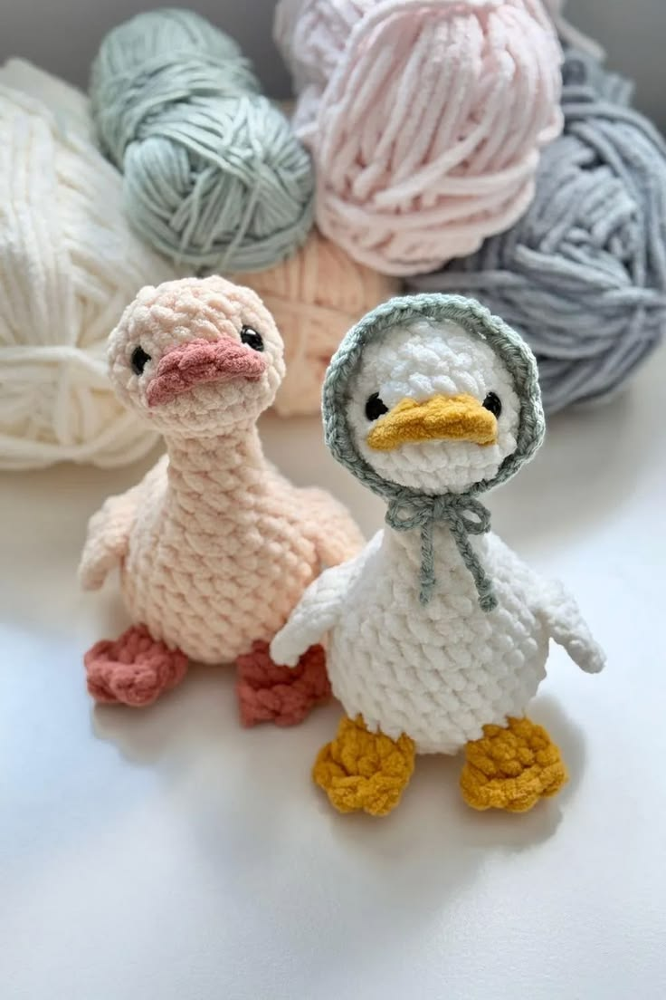
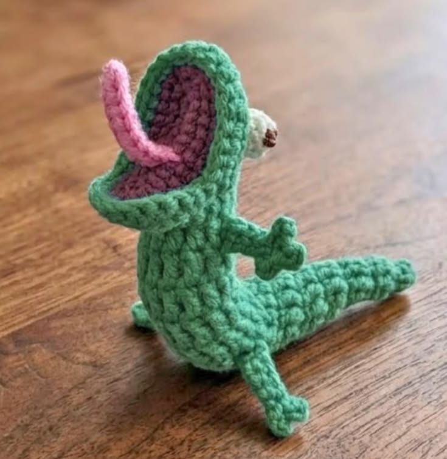
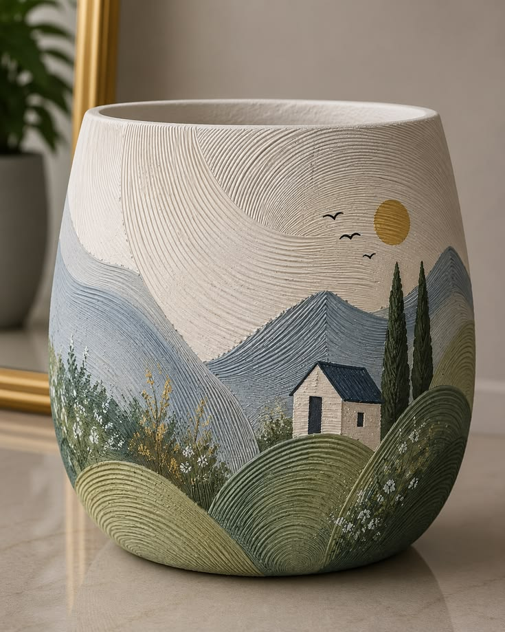
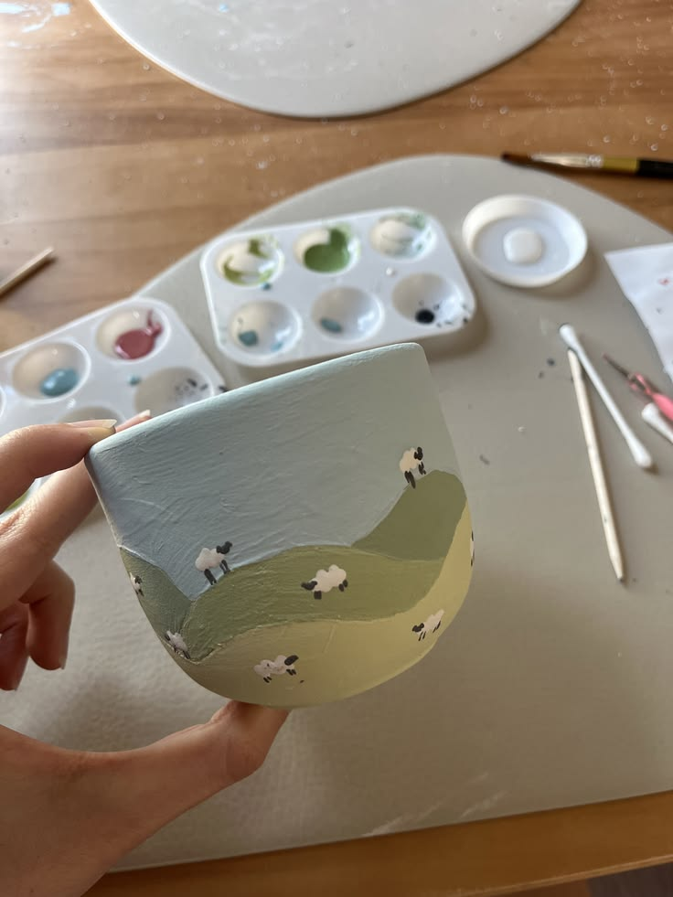
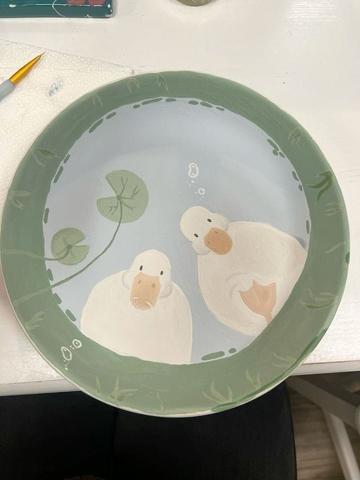
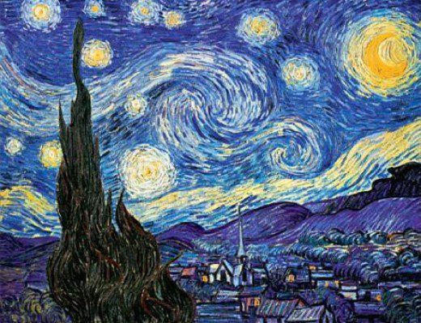

Dos patitos
Tejido a mano en lana de dos patitos.
Piezas unicas elaboradas con dedicacion y tradicion

Tejido a mano en lana de dos patitos.

Tejido a mano en lana de tom lagartija de Hoppers.

Tejido a mano en lana de ratatouille.

Taza de ceramica de paisaje en las montanas.

Taza de ceramica de paisaje con ovejas.

Plato decorativo de ceramica de dos patos.

Paisaje original al oleo con pastas que capturan la luz, que representa la puerta de una oportunidad.

Cuadro de la noche estrellada de Van Gogh, pintado en acuarela sobre papel de algodon.

Obra del El Principito, con colores pastel y un cielo estrellado.